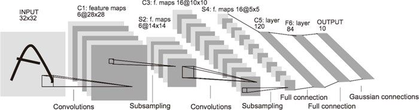
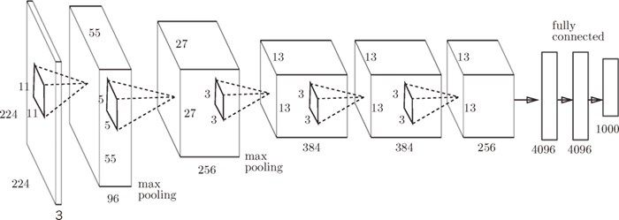

大多数情况下，深度学习（加深了层次的网络）存在大量的参数。因此，学习需要大量的计算，并且需要使那些参数“满意”的大量数据。可以说是 GPU 和大数据给这些课题带来了希望。
大多数情况下，深度学习（加深了层次的网络）存在大量的参数。因此，学习需要大量的计算，并且需要使那些参数“满意”的大量数据。可以说是 GPU 和大数据给这些课题带来了希望。
关于 CNN，迄今为止已经提出了各种网络结构。这里，我们介绍其中特别重要的两个网络，一个是在 1998 年首次被提出的 CNN 元祖 LeNet[20]，另一个是在深度学习受到关注的 2012 年被提出的 AlexNet[21]。
LeNet 在 1998 年被提出，是进行手写数字识别的网络。如图 7-27 所示，它有连续的卷积层和池化层（正确地讲，是只“抽选元素”的子采样层），最后经全连接层输出结果。

图 7-27 LeNet 的网络结构（引用自文献 [20]）
和“现在的 CNN”相比，LeNet 有几个不同点。第一个不同点在于激活函数。LeNet 中使用 sigmoid 函数，而现在的 CNN 中主要使用 ReLU 函数。此外，原始的 LeNet 中使用子采样（subsampling）缩小中间数据的大小，而现在的 CNN 中 Max 池化是主流。
综上，LeNet 与现在的 CNN 虽然有些许不同，但差别并不是那么大。想到 LeNet 是 20 多年前提出的最早的 CNN，还是很令人称奇的。
在 LeNet 问世 20 多年后，AlexNet 被发布出来。AlexNet 是引发深度学习热潮的导火线，不过它的网络结构和 LeNet 基本上没有什么不同，如图 7-28 所示。

图 7-28 AlexNet（根据文献 [21] 生成）
AlexNet 叠有多个卷积层和池化层，最后经由全连接层输出结果。虽然结构上 AlexNet 和 LeNet 没有大的不同，但有以下几点差异。
- 激活函数使用 ReLU。
- 使用进行局部正规化的 LRN（Local Response Normalization）层。
- 使用 Dropout（6.4.3 节）。
如上所述，关于网络结构，LeNet 和 AlexNet 没有太大的不同。但是，围绕它们的环境和计算机技术有了很大的进步。具体地说，现在任何人都可以获得大量的数据。而且，擅长大规模并行计算的 GPU 得到普及，高速进行大量的运算已经成为可能。大数据和 GPU 已成为深度学习发展的巨大的原动力。